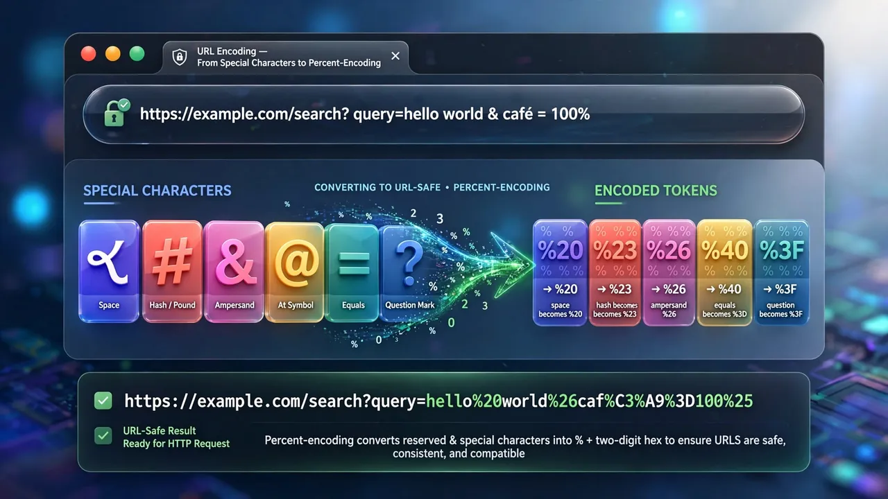
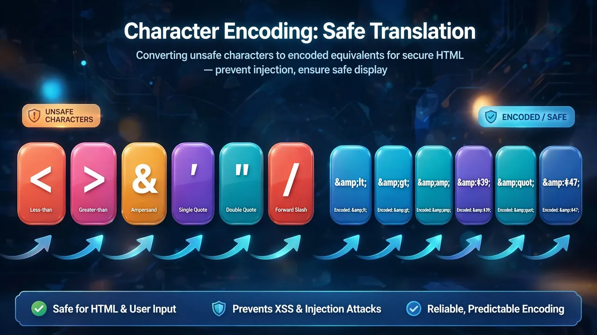

URL Encoding Explained: Why Spaces Become %20
What percent-encoding is, which characters need it, and why getting it wrong breaks links and query strings.
By Mubasher Hussain · Published 2026-08-01 · Updated 2026-10-03 · 1091 words · about 5 minute read

If you have ever seen %20 in a web address where a space should be, you have met URL encoding, also called percent-encoding. URLs are only allowed to contain a limited set of characters, so anything outside that set, spaces, accented letters, many symbols, has to be represented by a percent sign followed by two hexadecimal digits. The URL Encoder / Decoder converts text to and from this form in your browser, and this article explains why it exists and how to use it correctly.
Getting URL encoding right is not optional trivia: a single unencoded character in a query string can break a link, corrupt a search, or send the wrong data to a server. Understanding the rules prevents a whole class of frustrating bugs.
Why URLs cannot contain just anything
The URL standard reserves a small alphabet of characters that are always safe, letters, digits, and a handful of symbols like hyphen, underscore, dot and tilde. Everything else falls into two groups: reserved characters that have a special structural meaning (like /, ?, #, & and =), and unsafe characters (like spaces and many symbols) that can be mangled in transit. To include any of these as literal data rather than as structure, you must percent-encode them so the browser and server treat them as content, not syntax.

How percent-encoding works
The mechanism is simple. Each character to be encoded is represented by its byte value in hexadecimal, prefixed with a percent sign. A space is byte 32, which is 20 in hex, so a space becomes %20. An ampersand is %26, a question mark %3F, a forward slash %2F. Characters outside basic ASCII, such as accented letters and emoji, are first expressed as their UTF-8 bytes and each byte is percent-encoded, which is why a single accented character can become several percent codes.
In the query-string part of a URL, a space is sometimes encoded as + rather than %20, a legacy of old form submissions. The two are not interchangeable everywhere: %20 is always safe, while + means space only in query strings and a literal plus elsewhere. When in doubt, use %20.
Reserved characters and why they matter
The characters that structure a URL are the ones most likely to cause bugs when they appear in data. Consider a search for the literal text "cats & dogs." If you drop that straight into a query parameter, the & is read as the separator between two parameters, so the server sees a parameter "cats " and a separate parameter "dogs", not your intended search. Percent-encoding the ampersand to %26 tells the server it is part of the value, not a separator. The same logic applies to =, ?, # and / when they appear inside data.
Encoding query parameters correctly
The reliable rule when building URLs is to encode each parameter value individually, not the whole URL at once. Encoding the entire URL would wrongly encode the structural characters that are supposed to stay as syntax, the slashes, the question mark, the ampersands between parameters. Instead, take each value, encode it, and assemble the URL from the encoded pieces. This keeps the structure intact while making every value safe:
- Encode the value, not the delimiters.
- Assemble
?key=+ encoded value +&key2=+ encoded value. - Never double-encode: encoding an already-encoded string turns
%20into%2520.
Percent-encode text for safe use in URLs, or decode an encoded URL back to readable text, entirely in your browser.
Decoding to read what a URL really contains
Decoding is just as useful as encoding. A long, percent-heavy URL from an analytics link, a redirect or an API call is unreadable until you decode it, at which point the parameters and their values become clear. This is invaluable for debugging: decode a URL to see exactly what was sent, spot a double-encoding problem, or understand why a link is not behaving. Because the decoder runs in your browser, you can safely decode URLs that contain tokens or personal data without sending them anywhere.
Encoding different parts of a URL
One subtlety trips up even experienced developers: different parts of a URL have different rules about which characters are safe. A character that must be encoded in a query-string value might be perfectly fine in the path, and the space-as-plus convention applies only to the query component, not the path. This is why a single blanket "encode everything" approach is wrong, it can encode characters that were meant to stay as structure, or fail to encode ones that needed it in a particular component.
The practical defence is to use the right encoding function for the right job. Programming languages typically offer separate functions for encoding a whole URI versus encoding a single component, and the component-level function is the one you want for individual parameter values, because it encodes the reserved characters that would otherwise break the query structure. Build URLs by encoding each value with the component function and then joining them with the literal structural characters, the question mark, ampersands and equals signs, that you deliberately leave unencoded. Following that discipline consistently eliminates the whole family of bugs where a stray ampersand or equals sign in user data silently corrupts a request, and it means your links keep working even when someone searches for something full of symbols.
Whenever a link misbehaves or a search returns the wrong thing, suspect encoding first. Decode the URL to see what was really sent, check for a stray reserved character in a value, and watch for the tell-tale %2520 that betrays double-encoding. Nine times out of ten, a URL bug is an encoding bug, and a quick decode reveals it instantly.
URL encoding sits alongside other transport encodings a developer uses daily, Base64 for binary data, and clean slugs for human-readable URLs. Master the rule that you encode values rather than structure, never double-encode, and prefer %20 for spaces, and the mysterious percent codes in web addresses become an ordinary, predictable part of how the web works.